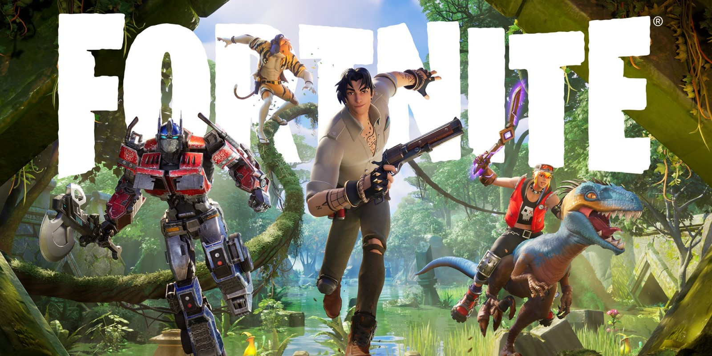

fortnite

Fortnite is an online video game developed by Epic Games and released in 2017. It is available in three distinct game mode versions that otherwise share the same general gameplay and game engine: Fortnite Battle Royale, a free-to-play battle royale game in which up to 100 players fight to be the last person standing; Fortnite: Save the World, a cooperative hybrid tower defense-shooter and survival game in which up to four players fight off zombie-like creatures and defend objects with traps and fortifications they can build; and Fortnite Creative, in which players are given complete freedom to create worlds and battle arenas.
Save the World and Battle Royale were released in 2017 as early access titles, while Creative was released on December 6, 2018. While the Save the World and Creative versions have been successful for Epic Games, Fortnite Battle Royale in particular became an overwhelming success and a cultural phenomenon, drawing more than 125 million players in less than a year, earning hundreds of millions of dollars per month. Fortnite as a whole generated $9 billion in gross revenue up until December 2019.
Save the World is available only for Windows, macOS,[c] PlayStation 4, and Xbox One, while Battle Royale and Creative were released for all those platforms, and also for Nintendo Switch, iOS,[c] and Android devices.[c] The game also launched with the release of the ninth-generation PlayStation 5 and Xbox Series X/S consoles.
- Fortnite: Save the World is a player-versus-environment cooperative game, with four players collaborating towards a common objective on various missions. The game is set after a fluke storm appears across Earth, causing 98% of the population to disappear, and the survivors to be attacked by zombie-like "husks". The players take the role of commanders of home base shelters, collecting resources, saving survivors, and defending equipment that helps to either collect data on the storm or to push back the storm. From missions, players are awarded a number of in-game items, which include hero characters, weapon and trap schematics, and survivors, all of which can be leveled up through gained experience to improve their attributes.
- Fortnite Battle Royale is a player-versus-player game for up to 100 players, allowing one to play alone, in a duo, or in a squad (usually consisting of three or four players). Weaponless players airdrop from a "Battle Bus" that crosses the game's map. When they land, they must scavenge for weapons, items, resources, and even vehicles while trying to stay alive and to attack and eliminate other players. Over the course of a round, the safe area of the map shrinks down in size due to an incoming toxic storm; players outside that threshold take damage and can be eliminated if they fail to quickly evacuate. This forces remaining players into tighter spaces and encourages player encounters. The last player, duo, or squad remaining is the winner.
- Fortnite Creative is a sandbox game mode, in which players are given complete freedom to spawn any item from the Battle Royale gamemode on a personal island, and can create games such as battle arenas, race courses, platforming challenges, and more.
Development
Fortnite: Save the World
- Fortnite began from an internal game jam at Epic Games following the publishing of Gears of War 3 around 2011. Though it was not initially one of the developed titles during the jam, the concept of merging the construction game genre, representing games like Minecraft and Terraria, and shooter games arose, leading to the foundation of Fortnite. Development of Fortnite slowed due to several issues, including switching from the Unreal Engine 3 to Unreal Engine 4, a deeper role-playing game approach to extend the life of the game, and a switch of art style from a dark theme to a more cartoonish style. Further, Epic was looking to get into the games as a service model, and brought in Chinese publisher Tencent to help; Tencent took a large stake in Epic as part of this, leading to the departure of several executives, including Cliff Bleszinski, who had been a key part of Fortnite's development. Fortnite's approach was changed to be Epic's testbed for games as a service, and further slowed the development.
Epic was able to prepare to release Fortnite as a paid early access title in July 2017, with plans to release it as free-to-play sometime in 2019 while gaining feedback from players to improve the game. With the release of Fortnite Battle Royale, the player-versus-environment mode was distinguished as "Save the World". Ultimately, Epic opted to release Save the World as a premium title, bringing it out of early access on June 29, 2020.
Fortnite Battle Royale
- Near the same time that Epic released Fortnite into early access, PlayerUnknown's Battlegrounds had become a worldwide phenomenon, having sold over 5 million copies three months from its March 2017 release, and drawing strong interest in the battle royale genre. Epic recognized that with the Fortnite base game, they could also do a battle royale mode, and rapidly developed their own version atop Fortnite in about two months. By September 2017, Epic was ready to release this as a second mode from "Save the World" in the paid-for earlier access, but then later decided to release it as a free game, Fortnite Battle Royale, supported with microtransactions. This version quickly gained players, with over 10 million players during its first two weeks of release, and leading Epic to create separate teams to continue the Fortnite Battle Royale development apart from the Save the World version, outside of common engine elements and art assets. This allowed Fortnite Battle Royale to expand to other platforms otherwise not supported by Save the World, including iOS and Android mobile devices and the Nintendo Switch.
Fortnite Creative
- A creative sandbox mode launched on December 6, 2018, synchronized with the start of season 7 of Fortnite Battle Royale. Each player has access to a private, persistent island on which they construct buildings and add and manipulate objects as desired. Players are able to invite friends to this island and participate in unofficial games such as race tracks or jumping courses. Only players who purchased the battle pass initially received their own island, but a week later, on December 13, players who did not purchase it received access to the game mode for free.